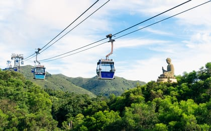

.png)

 Scenic, cultural, immersive
Scenic, cultural, immersive
Ngong Ping 360 is one of Hong Kong’s most renowned tourist attractions, located on Lantau Island and operated by the MTR Corporation.
It features a 5.7-kilometre bi-cable gondola system that connects Tung Chung to the Ngong Ping plateau, offering a scenic 25-minute
journey over North Lantau Country Park, the South China Sea, and Hong Kong International Airport. Visitors can choose from three cabin
types: the Standard Cabin, which accommodates up to 17 passengers; the Crystal Cabin, designed with a glass bottom for an enhanced viewing
experience; and the Crystal+ Cabin, which features floor-to-ceiling transparent glass panels for nearly unobstructed 360-degree visibility.
At peak times, the system can transport around 3,500 passengers per hour in each direction, supported by eight structural towers along the route.
At the upper station, passengers arrive at Ngong Ping Village, a themed cultural village built in traditional Chinese architectural style. The village
includes attractions such as Walking With Buddha, Monkey’s Tale Theatre, tea houses, souvenir shops, and restaurants, offering visitors a blend of entertainment
and cultural immersion. From the village, a short walk leads to the historic Po Lin Monastery, founded in 1906 and known for its serene atmosphere, intricate Buddhist
halls, statues, and daily incense offerings. Standing beyond the monastery is the famous Tian Tan Buddha, or Big Buddha, a 34-metre-tall bronze statue completed in 1993.
It sits atop a hill and can be reached by climbing 268 steps, providing sweeping views of the surrounding mountains and Lantau landscape.
Nearby, visitors can explore the Wisdom Path, a tranquil trail featuring tall wooden pillars inscribed with verses from the Heart Sutra, creating a peaceful environment ideal for
meditation and reflection. Ngong Ping 360 typically operates from 10:00 a.m. to 6:00 p.m. on weekdays and from 9:00 a.m. to 6:30 p.m. on weekends and public holidays, although
operating hours may vary seasonally. The cable car system may temporarily suspend service during strong winds, typhoons, or scheduled maintenance to ensure safety. Constructed with
minimal environmental impact, the project used helicopters and mules to transport materials across Lantau’s rugged terrain. Today, Ngong Ping 360 remains a gateway to both natural
beauty and cultural heritage, making it one of Hong Kong’s most memorable and iconic experiences for visitors and locals alike.